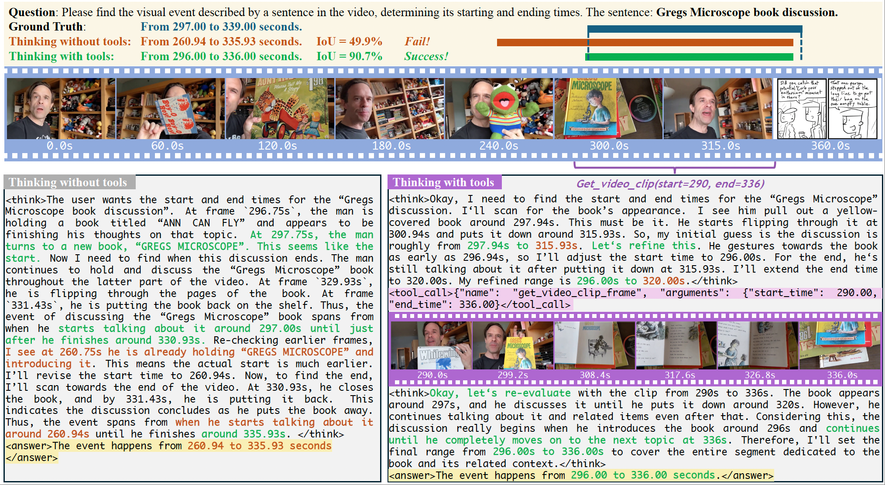
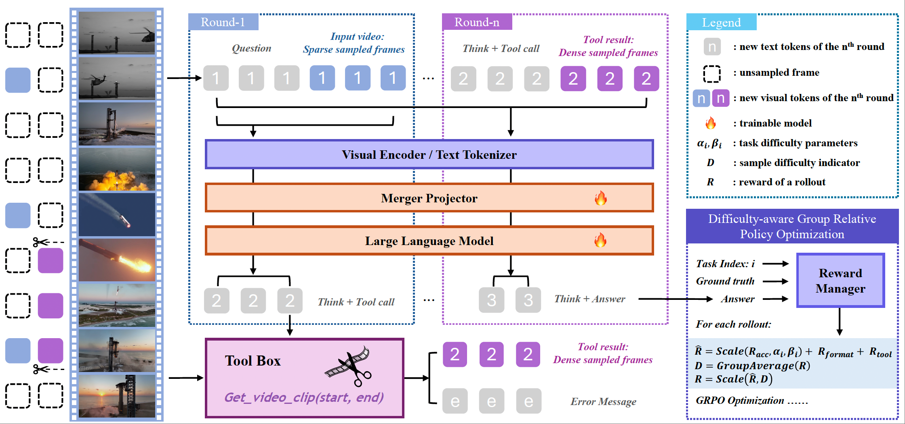
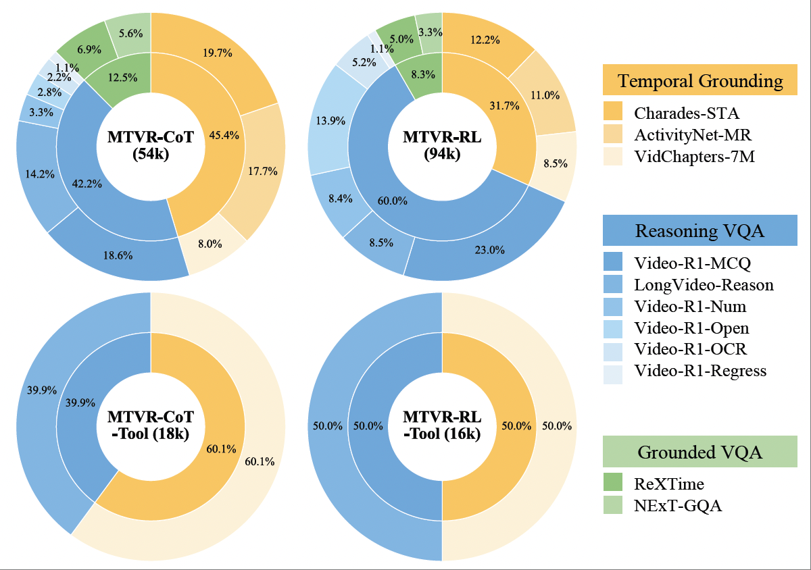
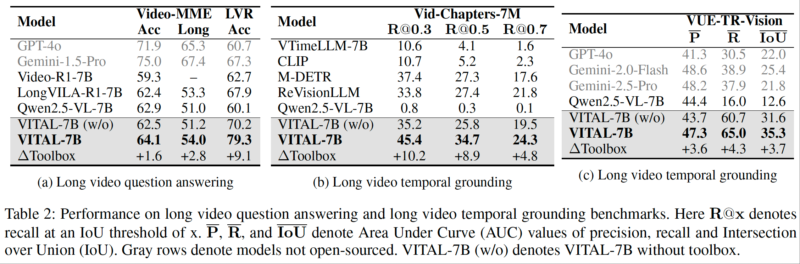
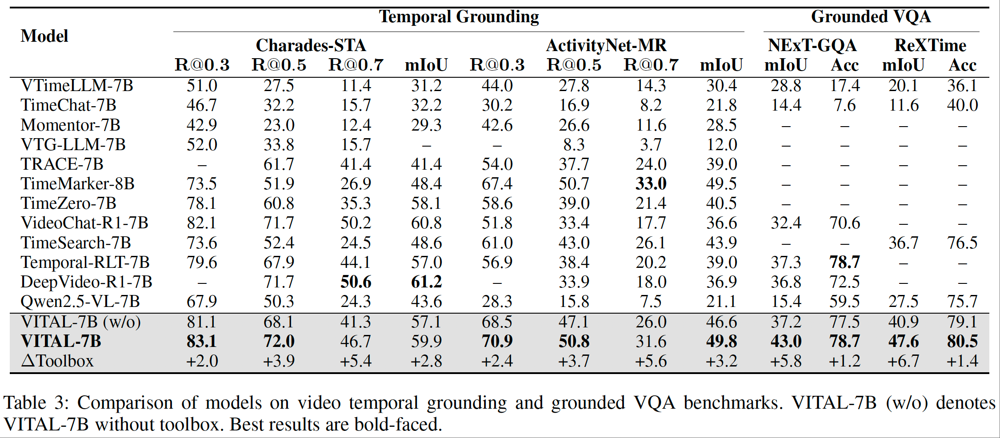
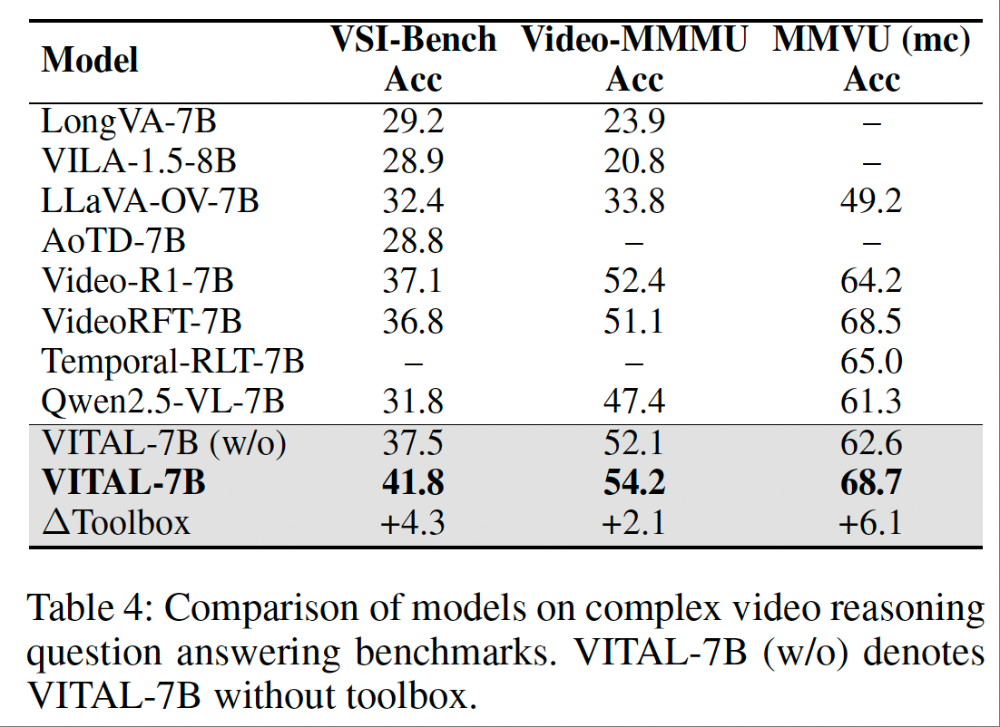
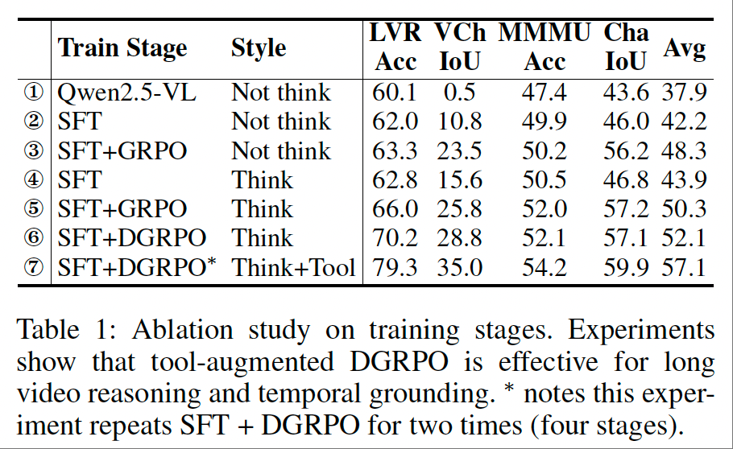
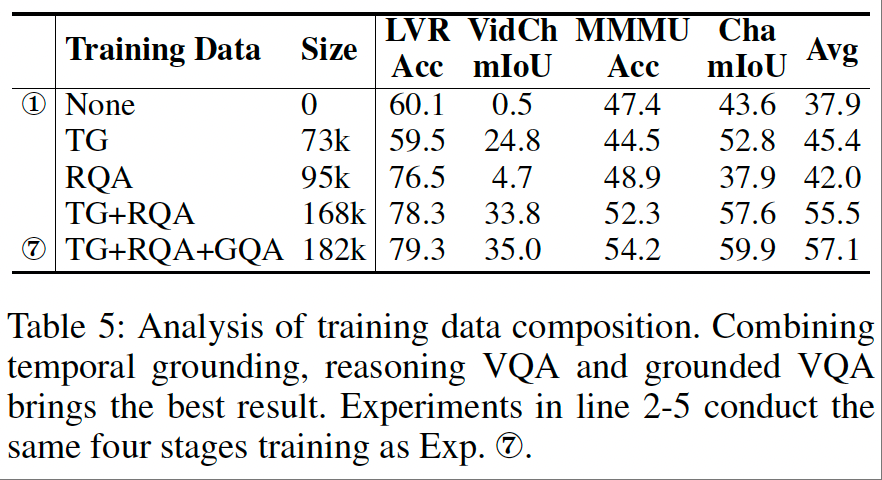

We proposed VITAL, a tool-augmented framework that enables advanced long video reasoning and temporal grounding. We also introduce MTVR, a high-quality multi-task video reasoning trainset.

The video reasoning ability of multimodal large language models (MLLMs) is crucial for downstream tasks like video question answering and temporal grounding. While recent approaches have explored text-based chain-of-thought (CoT) reasoning for MLLMs, these methods often suffer from limited cross-modal interaction and increased hallucination, especially with longer videos or reasoning chains. To address these challenges, we propose Video Intelligence via Tool-Augmented Learning (VITAL), a novel end-to-end agentic video reasoning framework. With a visual toolbox, the model can densely sample new video frames on demand and generate multimodal CoT for precise long video reasoning. We observe that temporal grounding and question answering are mutually beneficial for video understanding tasks. Therefore, we construct two high-quality multi-task video reasoning datasets MTVR-CoT-72k for supervised fine-tuning and MTVR-RL-110k for reinforcement learning. Moreover, we propose a Difficulty-aware Group Relative Policy Optimization algorithm (DGRPO) to mitigate difficulty imbalance in multi-task reinforcement learning. Extensive experiments on 11 challenging video understanding benchmarks demonstrate the advanced reasoning ability of VITAL, outperforming existing methods in video question answering and temporal grounding tasks, especially in long video scenarios. Code is available here.







If you find these projects useful in your research, please consider citing:
@article{zhang2025thinking,
title={Thinking With Videos: Multimodal Tool-Augmented Reinforcement Learning for Long Video Reasoning},
author={Zhang, Haoji and Gu, Xin and Li, Jiawen and Ma, Chixiang and Bai, Sule and Zhang, Chubin and Zhang, Bowen and Zhou, Zhichao and He, Dongliang and Tang, Yansong},
journal={arXiv preprint arXiv:2508.04416},
year={2025}
}